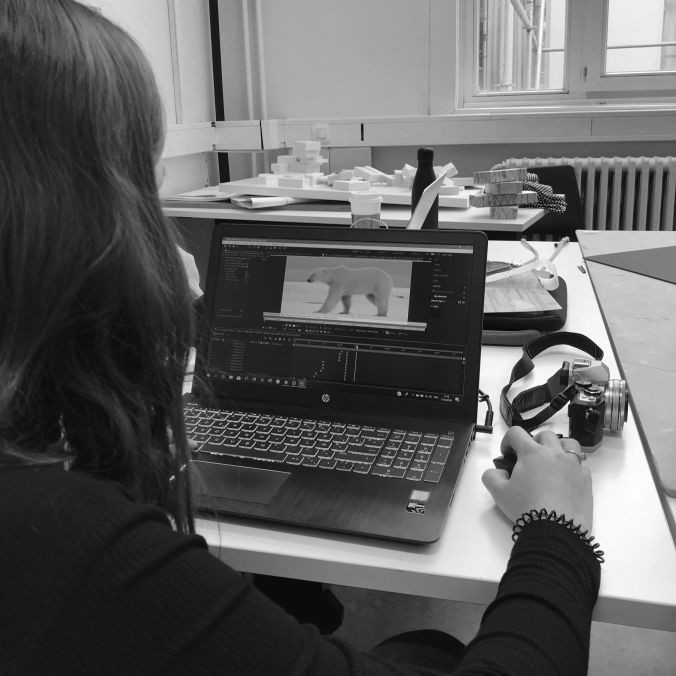

Een eerste stap in het ontwerpproces was om van elk dier een goed beeld te vinden waar we mee aan de slag konden gaan. Een goed beeld was een kort filmpje waarin het dier traag bewoog, volledig en duidelijk in zicht was én de beeldkwaliteit van hoge resolutie was. Hiervoor bezochten we verschillende sites en bekeken we in sneltempo vele natuurdocumentaires van o.a. BBC Earth en National Geographic. Wanneer er een mooi shot van een gekozen dier in beeld kwam namen we dit op. Daar gingen we dan verder mee aan de slag.
De tweede stap in ons proces naar het perfecte hologram was om het korte filmpje te importeren in het programma: Adobe After Effects. Nu was het de bedoeling dat we de achtergrond van het filmpje volledig zwart maakten. Dit betekende dat we voor elke seconde zo’n 25 beelden moesten bewerken. Als je dan nagaat dat een filmpje zo’n 12
seconden kon duren, was dit zeer tijdrovend maar zeker de moeite waard voor de kwaliteit van het eindproduct
Wanneer de achtergrond van het volledige filmpje dan zwart gemaakt was, importeerden we het in een nieuw programma, namelijk Adobe Media Encoder. Hier exporteerden we het videobestand zodat we er verder mee aan de slag konden in Powerpoint.
De laatste stap naar het hologram was dan om de video vier maal in Powerpoint te roteren zoals u ziet op de laatste foto. Dit was nodig om later het gewenste driedimensionale beeld te verkrijgen.
Natuurlijk hebben we verschillenden tests uitgevoerd waardoor we er achter kwamen dat sommige beelden niet kwalitatief genoeg waren. Na dit vastgesteld te hebben, zijn we bijvoorbeeld voor de ijsbeer een nieuw beeld beginnen zoeken.

Niet alleen was het een proces van trial en error met het vinden van de juiste videofragmenten, maar hebben we ook verschillende prototypes van onze installatie zelf gemaakt. Wanneer een video van een dier volledig klaargemaakt was om er een hologram van te maken, importeerden we dit op een Ipad mini. Deze plaatsten we dan op een speciaal ontworpen prisma en zo konden we het driedimensionale dier waarnemen. Het was echter zoeken naar het juiste formaat waardoor we we zo’n drie verschillende prototypes met verschillende afmetingen maakten.
waarnemen. Het was echter zoeken naar het juiste formaat waardoor we we zo’n drie verschillende prototypes met verschillende afmetingen maakten.
We hadden eerst het idee om de dieren heel groot weer te geven, maar kwamen later op het idee om ze heel kostbaar als kleine juweeltjes op te vatten. Dit resulteerde dan in ons eindproduct waarin er vijf kleine hologrammen tentoon worden gesteld.

© GROEP 11
Luna Fievet - Maarten Henckens - Marie Marichal - Britt Martens - Tine Vande Capelle